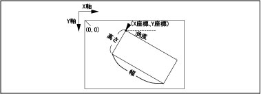

VISRECT
（ステートメント）

画面に矩形を描画します。

VISRECT <X座標>，<Y座標>，<幅>，<高さ>[，<モード>[，<角度>] ]

<X座標>
矩形を描画するX座標を指定します。
<Y座標>
矩形を描画するY座標を指定します。
<幅>
描画する矩形の幅を指定します。
<高さ>
描画する矩形の高さを指定します。
<モード>
描画する際のモードを指定します。
0：矩形のアウトラインのみ描画します。
1：すべて塗りつぶした矩形を描画します。
省略時は0を指定します。
<角度>
描画する直線の角度を指定します。省略時は、0°が設定されます。

-
X、Y座標、長さ、角度の数値のチェックはしていません。描画の範囲を超えてもエラーにはなりません。
-
対象画面はVISSCREENで設定された画面になります。
-
描画の輝度値はVISBRIGHTで指定した輝度になります。
-
本命令はロボットコントローラではμVisionボード（オプション）が必要です。



|
VISPLNOUT 0
|
'格納メモリ0番(処理画面)を表示します。
|
|
VISSCREEN 0,0,1
|
'処理画面0番に即時描画します。
|
|
VISCLS 0
|
'画面のクリア
|
|
VISBRIGHT 255
|
'描画する輝度値の設定
|
|
FOR I1 = 0 TO 360 STEP 5
|
'
|
|
VISRECT 256,256,100,100,0,I1
|
'高さ100幅100の矩形を描画します。
|
|
NEXT I1
|
'
|
|
VISRECT 200,200,50,50,215
|
'高さ50幅50の塗りつぶした矩形を描画します。
|